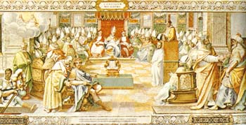
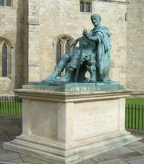
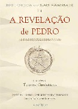

A Formação da Bíblia e os Evangelhos.

O Concílio de Niceia
Na página 220 de O Código Da Vinci, temos a seguinte declaração: "- Aí é que está! - exclamou
Teabing, cheio de entusiasmo. - A ironia fundamental da cristandade! A Bíblia, conforme a
conhecemos hoje, foi uma colagem composta pelo imperador romano Constantino, o Grande".
Dan Brown, aqui faz referência ao Concílio de Niceia, onde a Igreja Católica Apostólica Romana,
decidiu quais livros seriam compostos na Sagrada Escritura.
Pois bem, tudo teve início quando Roma estava passando por um momento crítico em relação
à religião. Nessa época estava ocorrendo uma revolução religiosa. Trezentos anos após a
crucificação de Cristo, seus seguidores haviam se multiplicado, resultando em uma luta entre
cristãos e pagãos. O conflito chegou ao ponto de dividir Roma ao meio, levando Constantino
a tomar uma atitude. O imperador, em 325 d.C. resolveu unificar Roma sob uma única
religião: o cristianismo. Constantino utilizou várias estratégias para converter os pagãos
adoradores do Sol em cristãos: fundindo símbolos, datas, rituais pagãos com tradição
cristã em ascensão, ele gerou uma espécie de religião híbrida aceitável para ambas as partes.
Ou seja, sincretismo.

O Imperador Constantino
Para cristalizar a nova tradição cristã, Constantino criou o Concílio de Nicéia, que consistia
em uma reunião ecumênica. Durante essa reunião muitos aspectos foram debatidos e receberam
votação, como a data da Páscoa, o papel dos bispos e a administração dos sacramentos,
“além, naturalmente, da divindade de Jesus”, como aponta Brown (2004).
Constantino aproveitou que todos respeitavam e veneram Cristo, e o usou para conseguir
colocar ordem em Roma novamente. Para conseguir manter seu poder, utilizou como base
algumas palavras de Jesus e construiu a Bíblia, resultando em um livro onde se encontra o que
seria o certo e o errado segundo a ótica do Imperador. Pode-se dizer que “Constantino moldou
a face da cristandade como a conhecemos hoje em dia”, diz Brown (2004).

Os Evangelhos Perdidos
Enquanto isso, os primeiros cristãos não tinham essa Bíblia compilada pelos CATÓLICOS.
Tinham sim um conjunto muito maior que até hoje está nos porões do VATICANO, mas
cujas cópias circulam por todo o mundo. Encerram narrativas que mostram episódios da
infancia de Jesus, e visões proféticas e apocalípticas, bem como os do velho testamento que
narram episódios da vida dos Judeus.
Porém, a Bíblia feita por Constantino “omitia os evangelhos que falavam do aspecto humano
de Cristo e enfatizada aqueles que o tratavam como divino. Os evangelhos anteriores foram
considerados heréticos, reunidos e queimados”, aponta Brown (2004).Convém dizer que a
pessoa era considerada herege ao escolher os evangelhos proibidos ao invés da Bíblia
Constantino.E este era o objetivo da Igreja Católica.Foram estudados mais de 80 evangelhos
para compor o Novo Testamento, e, no entanto apenas alguns foram escolhidos: Mateus,